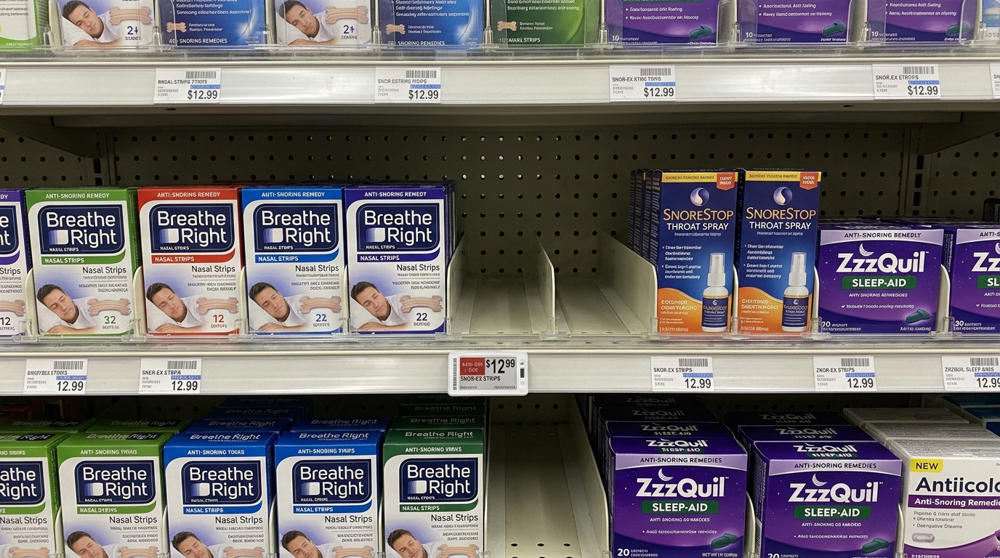
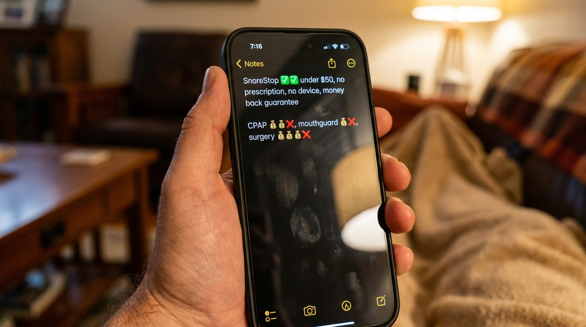
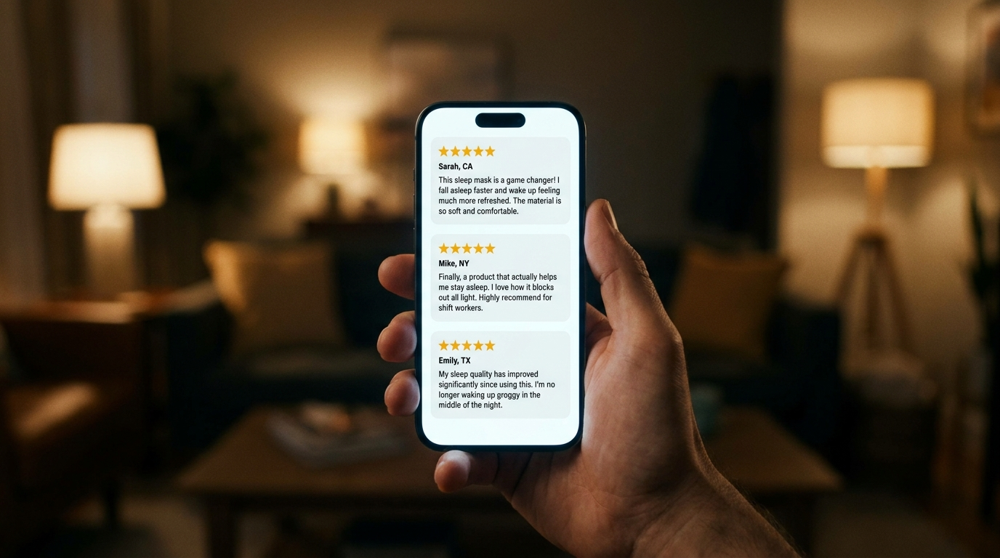
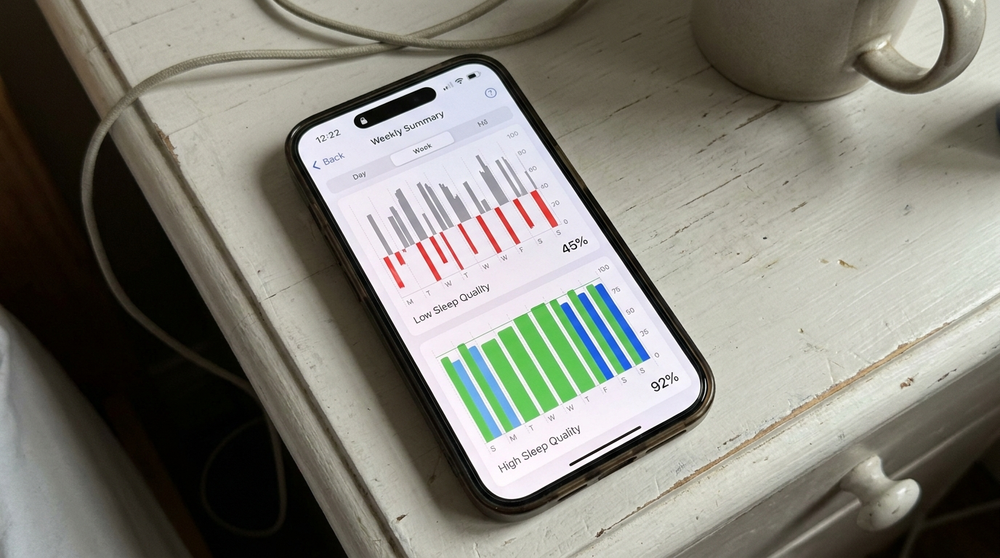

After 30 Years In Sleep Medicine, This Is The Only Anti-Snoring Solution I Recommend To My Patients (And Why I Stopped Recommending Mouthguards Entirely)
In thirty two years of clinical practice I have evaluated, recommended, and observed nearly every commercial anti-snoring product that has come to market. I have watched fads come and go. I have watched expensive interventions fail patients who could not afford them, and inexpensive interventions fail patients who deserved better. There is exactly one solution I still recommend to every snoring patient who walks into my office.
This article explains why.
I will not pretend to be neutral. After three decades of watching what works and what does not, I have opinions, and I am going to share them plainly. The patient who is reading this is someone who has likely already wasted significant money on the wrong things, and I do not see the value in pretending the market is balanced when it is not.
What follows is the same conversation I have with patients during their first visit, condensed.
What I Stopped Recommending, And Why
Early in my career I followed the conventional path. A patient came in with chronic snoring, I evaluated severity, and depending on what I found I would direct them to the appropriate intervention. Mouthguards. CPAP. In severe cases, surgical consultation.
Over the years, I quietly stopped recommending most of these.
Mouthguards I stopped recommending fifteen years ago. Patients consistently returned with jaw pain, tooth movement, or both, and the snoring almost always returned within months as the throat tissue continued to inflame regardless of jaw position.
CPAP machines I still refer patients to in cases of confirmed severe sleep apnea, because the medical risk justifies the intervention. For ordinary chronic snoring, the failure rate is too high. Between thirty and fifty percent of patients prescribed a CPAP either stop using it or never start. The cure became the new problem.
Surgery I rarely refer for. The recovery is painful, the cost is significant, and the recurrence rate over a five-year window is higher than most patients are told before signing the consent form.
Nasal strips, mouth tape, chin straps, and the assortment of online gadgets I do not recommend at all. They address parts of the body that are not the source of the noise.
That is a long list of things I do not recommend. Patients sometimes ask, half-jokingly, whether I recommend anything. I do. One thing.
Why I Recommend What I Recommend
Before I name it, the reasoning matters more than the name.
Snoring is not a noise problem. It is a circulatory and neurological problem that produces noise as a side effect. The vibration of inflamed throat tissue, occurring hundreds of times per minute across thousands of nights, has been linked in published research to thickening of the carotid arteries, elevated blood pressure, irregular heart rhythm, and early markers of cognitive decline.
A patient who snores chronically is not simply disturbing their partner. They are accumulating measurable cardiovascular and neurological risk every single night they continue to snore.
This is the part that changed how I practice. Once you understand that snoring is causing structural damage to the body, you stop tolerating interventions that merely manage the noise. You require interventions that address the cause.
The cause is in the throat. Inflammation in the soft tissue. Mucus accumulation in the airway. Loss of muscle tone in the pharyngeal muscles that should keep the airway open during sleep.
The intervention I recommend is the only one I have observed that addresses all three of those at the source.
"Once you understand that snoring is causing structural damage to the body, you stop tolerating interventions that merely manage the noise. You require interventions that address the cause."
The Formula
The intervention is a natural oral spray called SnoreStop, and the reason it works where every other category fails is that it treats the throat directly rather than working around it.
Its principal active ingredient is Nux Vomica, a compound used in naturopathic medicine for over a century. Applied to the soft tissue at the back of the throat, Nux Vomica supports the natural opening of the constricted pharyngeal muscles, the precise muscles that collapse inward during snoring and create the vibration. It is the primary mechanism. Without it, no formula targeting the throat can work.
Around Nux Vomica sits a small group of complementary natural ingredients, each chosen to address a specific layer of the problem.
Belladonna, to reduce inflammation in the throat tissue.
Kali Bichromicum, to clear the accumulated mucus that narrows the airway.
Cinchona, to support the natural rest cycle so the soft tissue does not over-relax during sleep.
These four ingredients address every layer of the snoring mechanism. The collapsed muscle tone. The inflammation. The mucus. The compromised sleep cycle.
The formula was put through a published double-blind, placebo-controlled clinical study, which is the standard of evidence required of pharmaceutical interventions. The results were significant enough to be cited in the naturopathic literature for decades since.
It is the only natural anti-snoring formula I am aware of that has been validated at this standard.
How It Is Used
Two sprays under the tongue. Two sprays at the back of the throat. Immediately before bed.
The full ritual takes under ten seconds. There is no device. No prescription. No fitting. No specialist referral. No machine on the nightstand.
Most patients report a measurable change on the first night. The majority reach full effect within five to seven nights of consistent use. A small percentage take up to two weeks.
It has been used by over 250,000 people in the United States since 1995. It is manufactured in FDA-regulated, GMP-certified facilities. It is fully natural and non-habit forming.
Why I Did Not Always Recommend It
I want to be honest about my own history with this formula, because I think it matters to the patient who is skeptical.
When SnoreStop first came on the market in 1995, I did not pay it much attention. I had been trained in the conventional model, and I assumed, like most clinicians at the time, that effective intervention required either a fitted device or a machine. A natural oral spray sounded too simple.
What changed my view was patient outcomes I could not ignore.
Patients I had referred to mouthguards, who returned with no improvement, were returning months later with their snoring resolved. When I asked what had changed, the answer was consistently the same. They had found SnoreStop on their own. Used it for a few weeks. The snoring stopped.
I started recommending it cautiously, then more confidently, then exclusively. Over the past two decades I have followed thousands of patients through this formula and watched outcomes that I would have described as unrealistic earlier in my career. It is the most effective non-prescription intervention for chronic snoring I have encountered in my practice.
Why You May Have Never Heard Of It
This is the question I am asked most often, and the answer is uncomfortable.
For nearly thirty years, SnoreStop was available over the counter in pharmacies across the country. It sat on the same shelf as the strips and the sprays that do not work, at roughly the same price point.
That changed.
The pharmaceutical industry generates billions of dollars per year from snoring. CPAP machines, custom mouthguards, sleep studies, surgical procedures. A natural formula sold under fifty dollars that addresses the root cause is, to put it bluntly, a problem for that revenue model.
Pressure has been building for years to remove SnoreStop from over-the-counter shelves. That pressure has succeeded. You can no longer find SnoreStop in most retail pharmacies. It is now available only directly from the manufacturer, through their official website.
I am careful with my words here. I am not making accusations. I am telling you what I have observed across three decades in this profession. The most effective natural treatments tend to be the hardest to find, and the reasons are not always clinical.
The company has chosen to continue selling it directly, at the original price, through their website. They have not raised the price. They have not changed the formula. They have not made it harder to access for the patients who need it. They have simply moved it to where they can still legally sell it.

On Cost
The price is the second-most-common reason patients hesitate, so I will address it directly.
A custom mandibular advancement device costs between fifteen hundred and four thousand dollars when properly fitted. A CPAP system runs eight hundred to fifteen hundred dollars before recurring mask and tubing replacements. A sleep study, where insurance does not fully cover it, can total one to three thousand. Surgery is four to six thousand and carries genuine clinical risk.
SnoreStop is under fifty dollars.
Patients tell me directly that the price made them skeptical. The expensive options had not worked, so the affordable one seemed unlikely to. Price is not a measure of clinical effectiveness. Price reflects the supply chain and gatekeepers a product had to pass through before it reached the patient. SnoreStop did not have to pass through dental specialists, ENT specialists, orthodontists, sleep clinics, or insurance pre-authorization. That is the only reason it costs what it does.
| Solution | Cost | Time To Get | Comfort |
|---|---|---|---|
| Surgery | $4,000 – $6,000 | Months + recovery | High risk |
| Sleep study + CPAP | $1,800 – $4,500 | 6–8 weeks | Low (50%+ abandon) |
| Custom mouthguard | $1,500 – $4,000 | 4–8 weeks | Often painful |
| OTC mouthguard | $80 – $300 | Immediate | Uncomfortable |
| SnoreStop | Under $50 | Immediate (online) | No device |

Patient Outcomes
A small selection of unsolicited reviews from verified buyers.
"I had tried everything. Three mouthguards, two surgeries on my soft palate, a CPAP I never used. My wife had been sleeping in the guest room for two years. First night with SnoreStop she came back to our bed. Three months later she has not left."
"I bought it for my husband. He was skeptical because it seemed too easy. Five days in he turned to me at breakfast and said he could not remember the last time he woke up not feeling like he had been hit by a truck. That was eight months ago. He uses it every single night."
"Thirty years of snoring. My grown children used to joke about it. After one week on SnoreStop my wife recorded me sleeping just to prove to me it was actually working. Total silence on the recording. I cried a little. I am not embarrassed to say it."

What I Observe At Follow-Up
The change at three months extends well beyond the absence of snoring.

The face is different at the follow-up appointment. The bags under the eyes have reduced. The skin tone has improved. Many patients have lost weight without trying, because the body is finally completing its overnight repair cycle uninterrupted.
Cognitive sharpness returns. Patients report being more present at work and more patient with their families. Resting blood pressure frequently drops at the next physical, sometimes enough that their primary physician notes it without being prompted. The two-o'clock fatigue most chronic snorers have lived with for years tends to lift entirely.
The partner is a different person at follow-up as well. Quietly accumulated resentment has nowhere left to live.
I did not understand the full scale of what snoring had been taking from these patients until I started watching it leave. The thirty-year-old who had assumed he would always be tired. The fifty-year-old who had assumed he was simply aging into a slower mind. The sixty-year-old whose wife had stopped expecting him to be present at the dinner table.
These are not separate problems. They are downstream effects of a single mechanism, and when the mechanism is corrected, the effects resolve in sequence.
The Guarantee
🟢 The SnoreStop 30-Day Guarantee
Every bottle of SnoreStop is backed by a full thirty-day money-back guarantee. If your snoring does not improve, return it. No questions, no forms, no phone calls. Full refund.
"Either it works or it's completely free. Two outcomes only. Your sleep returns, or your money does. There is no third option."
There are not many interventions in medicine that are mathematically impossible to lose. This is one of them.
A Note On Why I Am Writing This
I am writing this article for a specific patient. The patient who has tried multiple products, spent significant money, and has come to the quiet conclusion that the problem is unsolvable in their case.
It is solvable. The reason it has not been solved for you is almost certainly that you have been recommended interventions that target the wrong part of the body. That is not your fault. The market has been pointed at the nose and the jaw for decades, and the actual cause has been ignored.
If you stop snoring within thirty nights of starting SnoreStop, your sleep, your cognitive function, your cardiovascular health, and likely your relationship will all begin to recover in sequence. If you do not stop snoring within those thirty nights, the company refunds you in full and you have lost nothing.
I am aware that the fact that this product is no longer available in pharmacies will sound suspicious to some readers. I have addressed that above. The shift to direct sale was not a marketing decision. It was a regulatory consequence. The formula has not changed.
If you have read this far, you are likely the patient I am writing for. The right time to address chronic snoring was years ago. The second best time is tonight.
— Dr. Kenneth Hart, ND